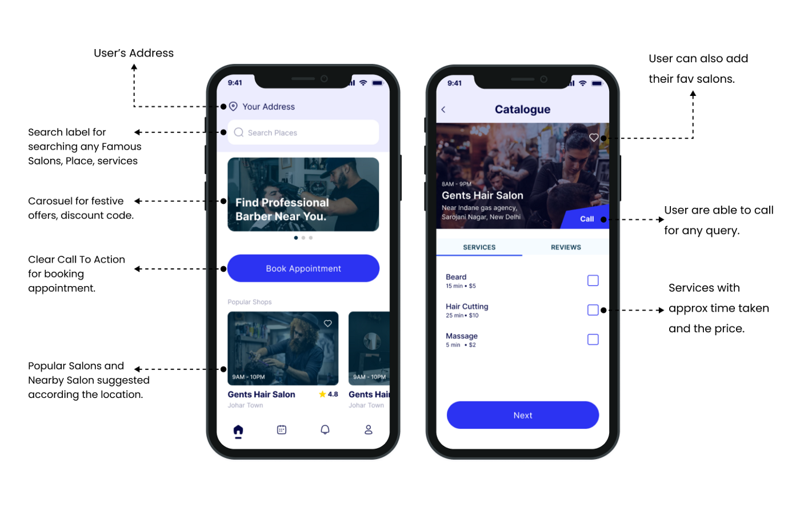

UX design | 2021
Instyle App
A UX Design Project that focuses on people’s needs who are tired of sitting and waiting at the salons for their turn. | Scheduling App.

Overview
This case study aims to understand the people’s needs and frustration when they went to the Salon for grooming. In India, people often like to go to Salons on the weekend, where they see many people sitting and waiting for their turn.
Overview
This process is very time taken and overwhelming for some people. It’s a detailed run-through of how I provided the relevant solutions to the people to save their time and only spend as much time as needed.
My Role
Role: UX Researcher & UX Designer
Responsibility: Conducting Surveys, Primary Research, Digital Wireframe, and Final
Prototype.
Timeline: November 2021 — February 2022
Problem Statement
A Scheduling app wants to help people to save their time by booking appointments in a nearby Salon from Home. As a Sole UX Designer, my goal is to empathize with people and understand their needs, behavior, and frustration of people to build a seamless happy user experience.
Conducting The Research
I planned to survey to help to identify
what people face in the Salons.
Why Survey?
Surveys give us the power to ask any questions (related to the study)
without taking more time from the people. Surveys can be a quick, easy, and inexpensive way
to obtain the data questions you ask.
Goal of the Survey
The goal of the Survey is to find out how many people are facing this problem in the Salon or Barber Shop, and To identify what other issues people might have face and Do they actually need the solutions to this problem?

Understanding the Problem Statement
To understand the problem statement more clearly, I
framed 5Ws — Who, What, Where, When, Why.
Who is experiencing the problem?
Knowing users and their backgrounds is key to
creating
successful solutions for them.
What are the pain points that need to be solved?
Determine a user’s pain points
early allow
me to ensure and clarify the context of the pain points.
Where do we need to focus the most?
Focusing on providing valuable features for
the user
that helps to solve this problem.
When does the problem occur?
Knowing when the
problem occurs can help to better empathize
with users.
Why is the problem important to solve?
According to the data, Most of the people
spend their time waiting
and sitting meaningless. An App that helps you to book and schedule an appointment will not
only saves time for users but providing users to choose desired time to book.
Understanding the Users
After receiving insights from the survey, I created personas so I could understand more potential needs, frustration, and goals of people to help decide on the functional requirements for Instyle app.
Pain Points and Features to Solve Pain
I found three major pain points of the user from the persona I created and To resolve user
pain points here are the three main features that’ll help users to cut out pain points.
-
Pain Points
- Time: People don’t know about the opening and closing times of the Salon.
- Location: People who move into a new city don’t know about the Shop Location.
- Waiting: The User doesn’t want to wait for 30–40 minutes in the salon.
-
Features & Functionalities
- Time: Providing the feature of opening and closing time of every shop.
- Location: People can read about the specific landmarks near the Salon.
- Waiting: Advance Booking that’ll help users to book appointments before.
Ideation
In this ideation phase, I focused on preparing Information Architecture to help users
understand where they are in the product and where they can get relevant information
about a
task.
Why Information Architecture is important?
Because it provides a high-level
view of a product and organizes the overall structure of the app which helps users to
quickly and easily identify how to book appointment.
High Fidelity Mockups
Home & Salon Screens
After completing all basic signup and onboarding
processes, the user comes to the Home screen which looks like this. The mobile app will
automatically ask users for their location so they can see their nearby available
salons.
I
designed a carousel for grooming tips and festive discounts. Then I designed a
Call-To-Action button for booking the appointment. When users open a Salon Catalogue where
they can see services and their prices with approx. time taken offered by a particular Salon
Problem Solved
On the home page, Users have multiple options to
book an appointment. After allowing the location detection, they can see their nearby
salons.
On the Salon catalog page, Users can see the Salon opening and closing times and the
information about the services including the price and approx time taken by a barber.
Search Page and Profile
Users can check and book their appointment in the desired location, date, and time. Users can also search for Salons in different places by search bar.
Problem Solved
Providing to choose any desired time and day for
the user to book an appointment inthe Salon.
For extra, If the user wants to
schedule an
appointment at another location, they can now search for places on the search page.
Appointment and Checkout
Users can easily track their appointment status and have Salon confirm their appointment or not. On the right side, is the checkout page, where users have two options for making payments Online and Offline.
Prototype may take few seconds to load.
Interact with Final Prototype
You can Interact with Final Figma Prototype on Desktop.
What I Learned
Soemtimes, assumption is a good way to figure out all possible problems of the users, but We shouldn't rely only on assumption. We never know everything about the user until and unless we talk to them, What we have to do is do the user research without being Omniscient.
Problem Solve
User Research is very important because it’s the starting & turning point of the product. It provides an essential foundation for design strategy. It helps you to create an optimal product for users.
Thank You!
Thank you for reading this Case Study! If you liked this let me know your thoughts. You can mail me at uxrishu@gmail.com